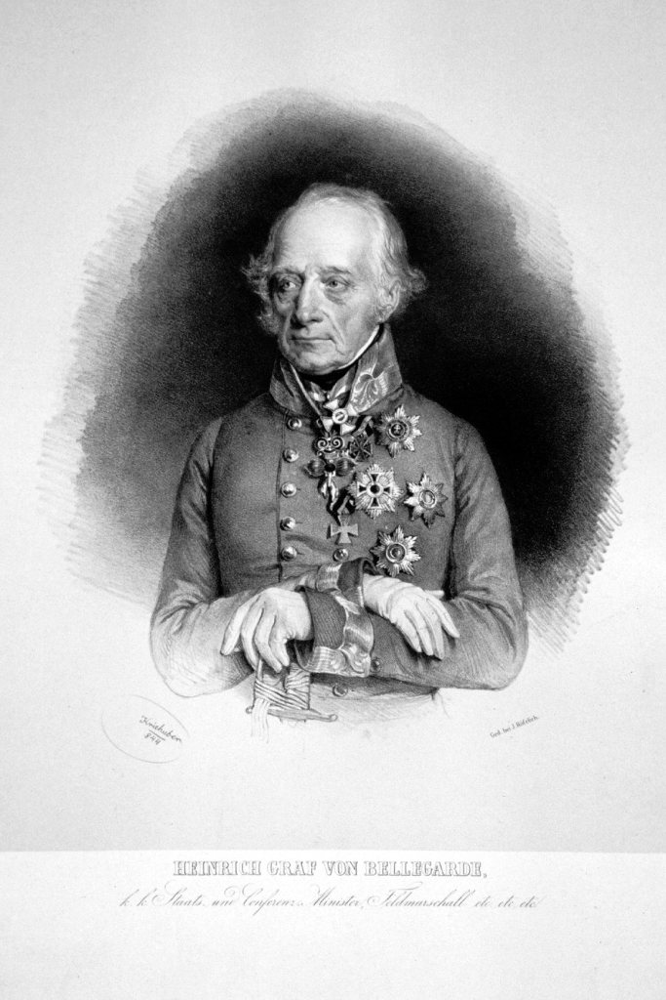
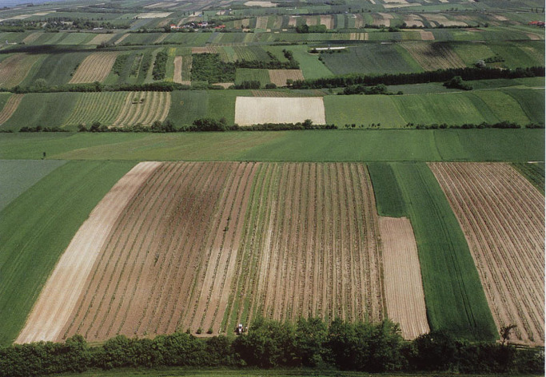
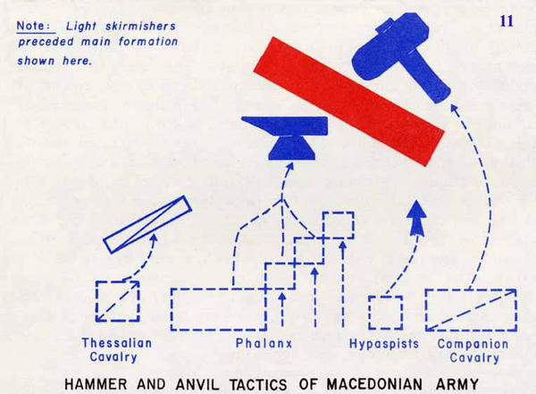

아스페른-에슬링 4편 - 카알 대공의 생각
게시: 2017-02-26T14:46:26+09:00
몰리토르(Molitor) 장군의 프랑스군 선발대가 로바우 섬에서 오스트리아군 수비대를 쫓아내고 있던 5월 19일 아침까지만 하더라도 카알 대공은 나폴레옹이 뉘스도르프 혹은 다른 어디로 도강할 것인지 확신하지 못하고 있었습니다. 놀랍게도 오스트리아군 사령부에서는 5월 18일 저녁부터 이루어진 프랑스군의 도강을 모르고 있었던 것입니다. 이는 카알 대공이 오스트리아군 본대를 도나우 강가에서 멀리 떨어진 후방에 위치시켜 놓았기 때문이었습니다.
(송양지인은 십팔사략에 나오는 고사로서, 춘추전국시대 송나라 양공의 일화입니다. http://blog.daum.net/wahnjae/17994302 참조)
송양지인(宋襄之仁)이라는 중국 고사성어에서도 나오듯이, 강을 건너는 적은 그야말로 상대하기 가장 쉬운 상대였습니다. 아예 적이 도강을 못 하도록 강가에서 막는 것도 좋았지만, 그보다 더 좋은 것은 적이 대군 중 약 1/3 정도만 건너온 상태에서 들이치는 것이었습니다. 전투의 기본은 'divide and conquer', 즉 적의 세력을 분산시킨 뒤 각개격파하는 것이었는데, 강이라는 천연장벽이 그것을 해주는 절호의 찬스였으니까요.
(명장은 아군의 수가 더 적더라도 어떻게든 혈투를 벌여 이기는 사람이 아닙니다. 비록 전체적으로는 적의 수가 많더라도, 전투 현장에는 아군 수가 적의 수보다 더 많은 상황을 만들어내는 사람이 바로 명장입니다.)
그런데 나폴레옹이 곧 강을 넘어온다는 것을 다들 알고 있던 이 때에, 왜 카알 대공은 강가에서 멀찍이 떨어진 저 후방으로 군대를 물려놓은 상태였을까요 ? 그건 카알 대공의 작전 계획이 당장의 전투 결과가 아니라 좀더 큰 전쟁 결과에 치중한 것이기 때문이었습니다. 카알 대공도 바보가 아닌지라, 나폴레옹이 어중간하게 강을 건넌 상태에서 공격하는 것이 가장 승률이 높은 작전이라는 것을 잘 알고 있었습니다. 그러나 그렇게 전투를 벌여 승리한다고 해서, 나폴레옹이 오스트리아에게 항복할 것인가라고 질문을 한다면, 거기에 대해 yes라고 말할 수 있는 사람은 없을 것입니다.
기억들 하시겠습니다만, 애초에 카알 대공은 1809년 상황에서 프랑스와의 전쟁에 돌입하는 것에 반대하는 입장이었습니다. 프로이센과 러시아가 모두 나가 떨어진 상황인지라, 혼자서 싸워야 하는 오스트리아에게 너무나도 불리한 상황이었거든요. 그러나 스페인에서 프랑스군이 헛발질을 하고 있고, 또 애써 편성해놓은 30만 대군을 오스트리아 정부의 재정난으로 인해 곧 해체해야 하는 상황에서, 어쩔 수 없이 전쟁에 뛰어든 것이었습니다. 사실 그런 상황이면 애초에 전쟁을 안 하는 것이 옳겠습니다만, 제국의 지도자들이라고 항상 논리적이고 이성적인 판단을 내리는 것은 아닌지라, 결국 상황이 이렇게 되어버렸지요.
상황이 그랬기 때문에, 카알 대공은 당장 나폴레옹에게 한방 먹이고 군기 몇 자루 빼앗는 것이 카알 대공의 목표가 될 수는 없었습니다. 그는 나폴레옹과는 달리 자신에게는 증원 병력이 없을 뿐만 아니라 자신의 군대가 더 오래 지탱할 수 없다는 것을 잘 알고 있었으므로, 정말 양쪽 다 여한이 없을 정도로 거하게 한판 제대로 붙어 나폴레옹을 꺾은 뒤 유리한 조건으로 평화 조약을 맺는 것이 오스트리아 합스부르크 왕조가 살 길이라고 확신했습니다. 그러자면 나폴레옹의 병력이 도나우 강 좌안으로 다 건너온 뒤에 싸워야 했습니다. 나폴레옹에게 '...만 아니면 내가 이겼다'라는 식의 변명거리를 줘서는 안 되었지요. 그랬다가는 나폴레옹이 다시 본국에서 증원군을 받아다 또 도전을 해 올 것이 뻔했으니까요. 그렇게 싸운다고 해도, 어차피 강을 등 뒤에 끼고 있는 것은 나폴레옹이었으므로 결국 지형은 카알 대공에게 절대 유리한 것이었습니다. 만약 오스트리아군이 쾌승을 거둔다면, 도나우 강을 등 뒤에 둔 프랑스군을 전멸시키는 것도 불가능한 일은 아니었습니다.
그런 이유 때문에 강가에서 멀리 떨어져 로바우 섬에서 벌어지는 소동을 모르고 있던 카알 대공도, 5월 19일 낮이 되자 더 이상 모를래야 모를 수 없는 상황이 되었습니다. 그날 이른 오후 비잠베르크(Bisamberg)에 자리잡은 관찰병들이 신호기(semaphore)를 통해 로바우 섬에서 교전이 벌어지고 프랑스군이 다리를 놓기 시작했다는 것을 알려왔고, 스파이들이 속속 달려와 나폴레옹의 도하 소식을 전해왔기 떄문입니다. 또한 카이저에버스도르프로 집결하는 프랑스군 보병과 기병들이 일으키는 먼지는 강 건너에서도 뚜렷이 보였습니다. 곧 힐러(Hiller) 장군이 달려와 적이 도하를 완료하기 전에 속히 공격하자고 건의했으나, 카알 대공은 침착하게 거부했습니다. 그는 애초에 마음 먹은 대로, 나폴레옹이 전군을 다 건너게 만든 뒤에 합스부르크 왕가의 운명을 걸고 한판 결전을 벌일 생각이었습니다. 그는 이 결전을 위해 그의 야전군 10만을 5개 대오로 편성하고 별도의 예비대도 준비했습니다.
제6군단 : 힐러(Johann von Hiller)
제1군단 : 벨가르드(Heinrich Graf von Bellegarde)
제2군단 : 호헨촐레른(Friedrich Franz Xaver Prince of Hohenzollern-Hechingen)
제4군단 : 로젠베르크(Prince Franz Seraph of Rosenberg-Orsini)
제4군단 일부 : 호헨로헤(Friedrich Karl Wilhelm, Prince of Hohenlohe)
예비군단 : 리히텐슈타인(Johann I Joseph, Prince of Liechtenstein)

(오스트리아-헝가리 제국은 워낙 다양한 민족으로 구성된 제국이다보니, 그 귀족들의 이름도 독일식, 프랑스식, 헝가리식, 크로아티아식, 체코식 등 정말 다양합니다. 저 초상화 속의 인물은 벨가르드 백작이신데, 이 분은 사보이 Savoy 귀족 가문 출신이신지라 가문 이름이 프랑스식입니다. 그러나 이 분 개인은 작센의 수도 드레스덴에서 태어난, 100% 독일인이라고 할 수 있습니다. 이 분은 기존 전투에서 나폴레옹의 신출귀몰한 지휘에 노리개감이 되는 역할을 주로 맡으셨지요.)
그가 도나우 강 좌안인 마르쉐펠트(Marchfeld)의 평원으로 병력을 출동시킨 것은 5월 21일 오전이 되어서였습니다. 그렇게 2일 간이나 시간을 줬으면 충분히 전군이 다 건너왔을 것이라고 생각했던 것이지요. 그러니 척후병들이 프랑스군이 아직 평원에 전개하지 않았다고 보고하자, 그는 몹시 당황할 수 밖에 없었습니다. 자기 딴에는 비장의 각오로 잔뜩 차려 입고 운명의 결투를 하러 나왔는데, 정작 무대에 상대방이 안 나온 셈이었으니까요. 그는 도나우 강 우안의 카이저에버스도르프에 놓인 부교가 끊어지는 바람에 프랑스군의 도하가 9시간 동안 중단되었다는 사실을 모르고 있었습니다.
프랑스군은 카알 대공의 기대처럼 운명의 한판 결전을 위해 평원으로 우우 몰려나올 생각이 없었습니다. 프랑스군은 아스페른(Aspern)과 에슬링(Essling)이라는 두 작은 마을을 점거하고 웅성거리고 있었습니다. 그는 그에 따라 야전에서의 대규모 충돌이 아니라, 이 두 마을 탈환을 위해 병력 전개를 새로 해야 했습니다. 어쨌든 싸우기는 싸워야 했으니까요.

(현대의 마르쉐펠트 평원의 모습입니다. 이곳은 전통적으로 강건너 빈에게 농작물을 공급하는 농지였고, 구릉지대까지는 아니지만 완전히 평탄한 지역은 아니며 또 이런저런 작은 시냇물이 가로지르는 지형입니다.)
한편, 21일 아침 강을 건너 전장을 둘러본 나폴레옹은 또 완전히 다른 생각을 하고 있었습니다. 그는 이런저런 시냇물과 그 강둑에 자란 작은 숲들로 인해 완전히 평탄하지는 않았던 마르쉐펠트 평원을 둘러 본 뒤, 옆에 선 마세나에게 '좌측을 움켜쥐고, 우측에서부터 돌돌 말아올린다'라는 작전 구상을 이야기했습니다. 즉 그는 좌측의 아스페른을 모루 삼아 굳게 지키며 오스트리아군을 유인한 뒤, 오른쪽 에슬링으로부터 망치같은 강력한 공세로 적진을 돌파한 뒤 오스트리아군을 중앙으로 몰아붙일 계획이었습니다. 그것이 성공한다면 강을 등지게 되는 것은 프랑스군이 아니라 오스트리아군이 되는 셈이었습니다. 정말 대담한 계획이었으나, 이 계획이 성공하려면 반드시 해결되어야 하는 선결 과제가 있었습니다. 아직 절반 이상의 병력이 도나우강 우안 카이저에버스도르프에서 웅성거리고 있는 상황에서, 부교가 계속 버티어 주어야 한다는 것이었지요. 그리고, 그러는 사이에도 도나우 강의 물살은 점점 더 거세지고 있었습니다.

(망치와 모루 전법은 기병 전술을 중시하던 알렉산드로스 대왕이 즐겨쓰던 전법입니다.)
Source : The Emperor's Friend: Marshal Jean Lannes By Margaret S. Chrisawn
Three Napoleonic Battles By Harold T. Parker
The Life of Napoleon Bonaparte, by William Milligan Sloane
https://en.wikipedia.org/wiki/Battle_of_Aspern-Essling